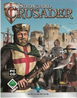
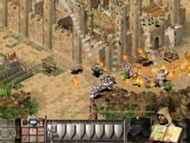

Stronghold Crusader
Archivierte Anleitung
Dieser Artikel wurde archiviert, da er - oder Teile daraus - nur noch unter einer älteren Ubuntu-Version nutzbar ist. Diese Anleitung wird vom Wiki-Team weder auf Richtigkeit überprüft noch anderweitig gepflegt. Zusätzlich wurde der Artikel für weitere Änderungen gesperrt.
Zum Verständnis dieses Artikels sind folgende Seiten hilfreich:
Stronghold Crusader ist der Nachfolger von Stronghold. Das Aufbaustrategiespiel legt den Fokus auf den Burgenbau und handelt von einem Kreuzzug nach Jerusalem, wobei der Spieler sich bis an die Stadttore herankämpfen muss. Es stehen insgesamt über 50 Missionen, historische Schlachten, der Burgenbaumodus sowie Erweiterungen aus dem Internet zur Verfügung.
Installation¶
Beim Starten der Installation kann es zu Problemen kommen, z.B. wenn das Autorunmenü nicht richtig angezeigt wird. Um die Installation dennoch starten zu können, muss die Setup.exe auf der CD ausgeführt werden [2] (oft auf /media/cdrom/disk1/Setup.exe). Bei der Installation sollte es keine Probleme geben.
Starten¶
Vor dem Start sollte darauf geachtet werden, dass eine aktuelle Wine-Version installiert ist [3]. User mit größeren Bildschirmen sollten einen virtuellen Bildschirm in der Winecfg emulieren, um eine bessere Grafikqualität zu erzielen, da die maximale Auflösung des Spiels nur 1024x768 beträgt.

Multiplayer¶
Um im Multiplayer spielen zu können, muss das Archiv dplaydlls-win98se.tar.bz2 entpackt [5] werden. Dieses findet man in der WineAppDB  .
.
Die dort enthaltenen Dateien nach .wine/drive_c/Windows/System32 kopieren. Zum Schluss die Wine Konfiguration starten [3] und in der Kartei "Bibliotheken" folgende DLLs hinzufügen (native, builtin):
dplayx
dpnet
dpnhpast
dpwsockx
Desweiteren muss zum Spielen im Netzwerk ein No-CD-Patch eingesetzt werden, da es sonst zu Komplikationen mit der Kopierschutzsoftware kommt.
Erweiterungen¶
Auf der offiziellen Homepage von Stronghold  können sowohl Demos (Single/Multiplayer) als auch neue Charaktere und Patches heruntergeladen werden.
können sowohl Demos (Single/Multiplayer) als auch neue Charaktere und Patches heruntergeladen werden.
Problembehandlung¶
Spiel lässt sich nicht starten/Grafikfehler¶
In winecfg [3] unter der Kartei "Grafik" sollten folgende Häkchen entfernt werden:
"Erlaube dem Fenstermanager die Fenster zu kontrollieren."
"Emuliere einen virtuellen Bildschirm"
"Pixel Shader aktivieren (wenn von Hardware unterstützt)"
"Unterstützung für Vertex Shader" sollte auf "Aus" gestellt sein. Nun sollten die Grafikfehler behoben sein.
Maus nicht sichtbar¶
In Stronghold Crusader gibt es zwei Mauszeiger zur Auswahl: einen normalen Zeiger und ein Schwert. Ubuntu hat Probleme mit der Darstellung des Schwert-Mauszeigers, weshalb man in den Spieloptionen den normalen Mauszeiger auswählen sollte.

Infobox¶
| Stronghold Crusader | |
| Genre: | Strategiespiel |
| Sprache: | |
| Veröffentlichung: | 31. Oktober 2002 |
| Entwickler: | Firefly Studios |
| Verleger: | Take 2 Interactive, God Games |
| Systemvoraussetzungen: | CPU 300 MHz, 64 MB RAM, 850 MB freier Festplattenspeicher, Grafikkarte mit 4 MB RAM |
| Spielermodi: | Singleplayer, Multiplayer |
| Steuerung: | Tastatur, Maus |
| Altersfreigabe: | ab 12 |
| Aktuelle Version: | 1.1 |
| Medien: | CD (1) |
| Läuft mit: | Wine |
- Erstellt mit Inyoka
-
 2004 – 2017 ubuntuusers.de • Einige Rechte vorbehalten
2004 – 2017 ubuntuusers.de • Einige Rechte vorbehalten
Lizenz • Kontakt • Datenschutz • Impressum • Serverstatus -
Serverhousing gespendet von